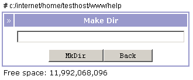

Рис 6. Просмотр файла php из PhpCommander
PhpCommander - лучший выбор для удаленного администрирования сайтов!
Добро пожаловать на страницу документации программы PhpCommander! Возможно вы сталкиваетесь с этой программой впервые или уже что-то слышали о PhpCommander ранее, - в любом случае рекомендуем ознакомиться с ее подробным официальным описанием прямо сейчас. Если вы часто сталкиваетесь с задачами администрирования файловой системы через интернет, то эта программа во многом облегчит решение ваших задач.
Данная программа предназначена для удаленного администрирования файловой системы сервера. PhpCommander позволяет легко и удобно через интернет просматривать файловую систему сервера, а именно: получить оглавление доступных каталогов, отредактировать выбранные файлы, посмотреть уже существующие, создать новые, удалить ненужные, скопировать, переместить группы файлов и каталогов. С помощью этой программы вы также можете заливать файлы на сервере и скачивать их на локальный компьютер.
PhpCommander работает под управлением PHP4 на операционных системах Unix, Linux, FreeBSD и Windows. Для работы подойдет не только Windows 2000 или Winodws XP, но даже Windows 95! Все, что нужно для использования - это обычный веб-сервер Apache или Microsoft Internet Information Server (IIS) и язык PHP. Программа не требует никаких спецальных настроек, поддерживает русский и английский язык, имеет легкий дружественный интерфейс с интуитивно понятными информационными окнами и диалогами.
Если вы когда-нибудь копировали свои файлы с помощью программ-менеджеров: Norton Commander, Volkov Commander, Total Commander, Midnight Commander или, на худой конец, обычным Проводником Windows (Windows Explorer), то изучение и использование программы PhpCommander будет для вас просто очевидным.
Кстати, PhpCommander, как и Проводник Windows, позволяет копировать файлы и папки не только в пределах жесткого диска, но и с дискет, CD-дисков, ZIP-дисков, Flash-карт и других съемных устройств. Причем все это можно делать удаленно. Поэтому PhpCommander просто незаменим для создания, поддержки и обновления сайтов!
PhpCommander - настоящий файловый менеджер. Он позволяет выполнять большинство операций, которые Вы обычно проделываете с файлами и каталогами.
Рис 1. Внешний интерфейс PhpCommander
Выше представлен внешний вид программы. Как видно, программа показывает на экране список файлов. В списке файлов представлены: атрибуты, название, расширение, размер и дата изменения файла, а также кнопка выделения файла (галочка) для дальнейшего проведения операций копирования/перемещения/удаления. Более полный перечень возможных операций приведен ниже.
На экране всегда представлен отсортированный список файлов в текущем каталоге, название которого отображается сверху. Там же отображается дата и время чтения этого каталога. Файлы могут быть отсортированы не только по имени, но и по расширению, размеру, дате модификации. Файлы также подсвечиваются разными цветами в зависимости от типа. В программе предусмотрена возможность изменить настройки подсвечивания по умолчанию. Навигация по каталогам файловой системы, т.е. изменение текущего каталога - происходит при нажатии мышкой на имени каталога, каждый из которых отмечен символами [DIR]. При работе под Windows есть возможность поменять текущий диск - в выпадающем списке слева внизу. Еще ниже всегда показывается размер доступного дискового пространства.
Выделение группы файлов/каталогов - [All|None|MouseClick] - одна из основных операций в PhpCommander. Выделение часто необходимо для проведения дальнейших операций просмотра, редактирования, копирования, перемещения, удаления, которые требуют наличия хотя бы одного выделенного файла. Если Вы попытаетесь провести такую операцию в тот момент, когда нет ни одного выделенного файла - программа покажет предупреждающее сообщение. Выделенные файлы отмечаются галочкой в соответствующем поле слева. Выделяются файлы нажатием мышки, причем можно выделять сразу все файлы в каталоге нажатием на ссылку All и снимать выделение со всех файлов нажатием на ссылку None.
Создать новый каталог с помощью программы PhpCommander можно, выбрав в меню пункт MkDir. В появившемся диалоге необходимо указать имя нового каталога и все готово!
PhpCommander позволяет создавать новые файлы в текущем каталоге. Для этого необходимо просто нажать на ссылку New. Файл можно создавать с любым допустимым именем и расширением. Набор исходных данных для файла осуществляется в диалоге - "блокноте".
Для просмотра существующих файлов нужно выделить необходимые файлы галочкой и нажать на ссылку View. Если ни один из файлов не выделен - программа выдаст предупреждение. PhpCommander показывает каждый отмеченный файл в отдельном окне, т.е. вы можете просматривать несколько файлов сразу! Среди текстовых файлов программа различает файлы с расширениями htm, html - и показывает их как HTML-страницы (text/html), файлы с расширением txt показывает как простой текст (plain/text), а файлы с расширениями php, php4, php3, phtml показывает как подсвеченный код PHP. Стоит отметить, что вы также легко можете просматривать и картинки JPG, GIF, PNG и BMP. Но не увлекайтесь просмотром больших картинок через интернет - ведь картинки "съедают" большую часть трафика.
Для редактирование необходимо выбрать (отметить галочкой) только один файл. В противном случае программа появится предупреждение - ведь в реальности человек не может править несколько файлов одновременно. Для перехода к диалогу редактирования необходимо нажать на ссылку Edit. Помните, что редактировать файлы с атрибутами "Только для чтения" бесполезно. Для этого сначала необходимо поставить атрибуты для записи.
Переименование выбранного файла производится при нажатии на ссылку Rename. Данная операция позволяет с легкостью переименовывать и каталоги - для этого просто необходимо отметить каталог. В появившемся диалоге необходимо указать новое имя файла или каталога, но если файл с таким именем уже существует, переименование не произойдет. Это гарантировано защитит Ваши файлы от случайной потери.
PhpCommander позволяет удалять выделенную группу файлов и каталогов при нажатии на ссылки Remove, Remove All и Remove Except. При этом первая операция удаляет только отмеченные Вами файлы. Вторая - удаляет все файлы и каталоги в текущем каталоге. А третья - удаляет все файлы и каталоги в текущем каталоге, за исключением отмеченных. Будьте внимательны при удалении своих файлов. Спасительной "корзины" в интернете нет, и вам, скорее всего, не удастся восстановить удаленные файлы.
Для копирование и перемещения файлов и каталогов в программе PhpCommander используется метод Cut-Copy-Paster. Выделенные галочкой файлы и каталоги сначала помещаюься в буфер операциями Cut - для перемещения и Copy - для копирования, а после перехода в каталог назначения вставляются операций Paste. Сохраненные в буфере файлы и каталоги отмечаются яркими желтыми линиями. После проведения копирования/перемещения буфер опустошается. Если вы передумали копировать или перемещать файлы - всегда можно очистить буфер, нажав на ссылку Clear.
Как уже упоминалось выше, бывает очень полезно изменить атрибуты доступа к выбранному файлу. Для этой цели нужно отметить галочкой файл и нажать на ссылку Attr, а в появившемся диалоге выставить необходимые атрибуты. Внимание для пользователей Windows: при работе в этой системе программа различает только атрибуты "для чтения" и "для записи", и никак не учитывает атрибуты "выполнения", присущие всем Unix-системам.
Эта операция, выполняемая после выбора файла на локальном компьютере и нажатия на ссылку Upload, позволяет загрузить указанный файл на удаленный сервер - как раз тот, где и работает PhpCommander. Здесь нужно быть особенно осторожным, т.к. в ряде случаев для выполенения этого действия в Unix-системах должны стоять полные права на запись ("Запись для всех"). Желательно, создавать каталоги с такими правами выше "корня сайта", и помещать файлы в каталог назначения с помощью операции копирования. Либо же, просто быть внимательными и не оставлять в своей системе такие лакомые места, как "запись для всех". Не забывайте, что PhpCommander легко меняет атрибуты файлов и каталогов.
Выделив файл в текущем каталоге и нажав на ссылку Send, вы можете скачать выбранный файл к себе на локальный компьютер. Таким образом, вы всегда можете хранить содержимое сервера, например, у себя дома. Помните, что скачивание больших файлов - трудоемкая операция, отнимающая ваш трафик.
При нажатии на ссылку MkDir открывается диалог, в котором запрашивается имя создаваемого каталога. В этот момент можно отменить создание каталога, нажав на кнопку Back. Создаваемый каталог размещается в текущем каталоге. Если каталог уже существует, то он не создается, а пользователю выводится предупреждение.

Рис 2. Диалог создания нового каталога
Диалог создания нового файла появляется после нажатия на ссылку New. В диалоге задается имя нового файла и его содержимое, после чего есть возможность сохранить введенные данные в текущем каталоге с заданным именем или вернуться к просмотру каталога. Если файл с указанным именем уже существует, то сохранение не производится, данные не утрачиваются, и предлагается ввести другое имя для файла
Рис 3. Создание нового файла newfile.html
Правка существующего файла происходит в диалоговом окне редактирования, которое появляется после выделения одного файла и нажатия на ссылку Edit. В этом диалоге есть возможность сохранить изменения нажатием на кнопку Save или вернуться к просмотру текущего каталога при нажатии на кнопку Back
Рис 4. Редактирование файла newfile.html
При нажатии на ссылку Rename открывается диалог для переименования выделенного ранее файла, в котором запрашивается новое имя файла. Если файл с указанным именем уже существует, то переименование не производится, а пользователю выдается соответствующее предупреждение. Переименовывать можно не только файлы, но и каталоги.
Рис 5. Переименование выбранного файла
Операция View позволяет просматривать отмеченные галочкой файлы в отдельном окне. При этом просматривать можно не только текстовые файлы, но и картинки форматов JPG, GIF, PNG, BMP. Файлы с расширениями .htm и .html показываются как html-страницы (text/html), файлы с расширениями .txt - как простой текст (text/plain), а файлы с исходными кодами PHP - синтаксически подсвечиваются. Выделять для просмотра можно сразу несколько файлов.
Рис 6. Просмотр файла php из PhpCommander
При нажатии на ссылку Attr PhpCommander позволяет устанавливать атрибуты отмеченного файла и каталога в диалоге установки атрибутов. Эта задача очень актуальна для обеспечения безопасности вашего сайта, размещенного на Unix-системе. В среде Windows имеет смысл работа с атрибутами "Только для чтения". Атрибуты для владельца, группы и всех пользователей удобно устанавливаются с помощью галочек.
Рис 7. Изменение атрибутов выбранного файла
Операции перемещения и копирования группы файлов и каталогов выполняются с выделенными файлами с помощью нажатия на ссылки Cut и Copy. Отмеченные файлы сначала помещаются в буфер и выделяются желтым цветом. Затем требуется перейти в каталог назначения и выполнить там операцию Paster. При этом, выделенные на предыдущем этапе файлы будут скопированы или перенесены в текущий каталог.
Рис 8. Выделение файлов для копирования или перемещения
Все сообщения об ошибках PhpCommander показывает в отдельном информационном окне. Большинство ошибок, как правило, связано с отсутствием или дублированием файлов, с ограничениями прав доступа в каталог и лимитированием размера файлов для редактирования и просмотра. Очевидно, что править файл размером 100 мегабайт вам через интернет не удастся - это слишком ресурсоемкая операция. Но для большинства задач, связанных с удаленным редактированием скриптов, html-страничек и других текстовых файлов эти ограничения не существенны.
Рис 9. Показ сообщения об ошибке
При разработке PhpCommander учитывались требования к безопасности, которые могли бы ограничить вторжение случайных пользователей, способных повредить файловую систему. Для этого предусмотрена система аутентификации, которая поддерживает аутентификацию Apache/PHP через с помощью соответствующих заголовков, а также свою внутреннюю аутентификацию, которая, в отличие от первой, остается работоспособной в CGI-режиме и при работе программы под Windows.
Перед началом работы программа всегда запрашивает логин и пароль пользователя и сравнивает их с теми, что хранятся в файле users.txt. По умолчанию предусмотрен вход с логином user и паролем 12345. Внимание! Значения по умолчанию необходимо сменить! Сделать это можно с помощью утилиты pwd.php, которая входит в состав PhpCommander.
Использовать утилиту pwd.php просто. В каталоге, где хранится файл users.txt достаточно набрать несколько строк в командной строке. Для добавления нового пользователя наберите:
php pwd.php a newuser newpassword
Для удаления существующего пользователя (user) необходимо набрать:
php pwd.php d user
После завершения настройки логинов и паролей желательно спрятать утилиту pwd.php подальше, чтобы врагам не досталась. За другой ценный файл users.txt можно не так беспокоиться, т.к. пароли к логинам шифруются и нет никакой возможности расшифровать их обратно.
Рис 10. Запрос логина и пароля перед началом работы с PhpCommander
Другая возможность обеспечения безопасности - это ограничение прав на просмотр дерева каталогов, доступных для программы PhpCommander и задание начального стартового каталога. За эти функции отвечают параметры конфигурационного файла $BASEPATH и $STARTDIR. О том, как задать их значения более подробно можно прочитать в следующем разделе.
Несмотря на то, что программа PhpCommander не требует специальных настроек, такая возможность все же предусмотрена. Все настройки программы хранятся в исходном файле config.php. Ниже перечислены основные параметры настроек.
$COLORS - этот параметр содержит таблицу подсветок для разных типов файлов. Здесь вы можете указать, какими цветами подсвечивать ваши файлы и каталога для того, чтобы упростить зрительное восприятие этой весьма однообразной информации.
$MAXVIEWSIZE - этот параметр задает ограничения на размер файлов, которые можно редактировать или просматривать, т.к. эти действия приводят к активному использованию трафика.
$STARTDIR - этот параметр задает стартовый каталог, который будет показан при первом запуске программы. С его помощью вы можете ограничить доступ к исходным текстам самого PhpCommander и тем самым повысить безопасность своей системы.
$BASEPATH - назначение этого параметра - хранить "корневой" путь, выше которого доступ для PhpCommander ограничен. Настроив этот параметр на определенный каталог, например на /usr/home/vasya, вы говорите, что любые изменения файловой системы могут происходить только внутри этого каталога. Таким образом, вы оберегаете все остальные файлы вашей системы от случайного вмешательства.
$WINDRIVES - этот параметр имеет смысл только для Windows-систем. Здесь вы можете ограничить число дисков, к которым PhpCommander будет иметь доступ. Например, доступ к системному диску C: простым смертным пользователям желательно не предоставлять и, тем более, удаленно.
Существуют и другие параметры настройки - более подробно о них вы сможете прочитать в комментариях в файле config.php
Прежде, чем скачать и приступить к работе с PhpCommander внимательно прочитайте этот раздел!
Для запуска программы PhpCommander предполагается, что у вас уже установлена операционная система Linux или Windows. Дальше необходимо установить Web-сервер Apache и язык PHP для него.
Последняя версия Web-сервера Apache всегда доступна для скачивания на сайте www.apache.org. Информацию о настройке сервера можно прочитать в разделе "Документация". Или просто вручную, как вам необходимо, настроить файл конфигурации httpd.conf для него. Если вы используете IIS - можете сразу переходить к установке и настройке PHP.
Последняя версия языка PHP всегда доступна для скачивания на сайте www.php.net. О том, как настроить PHP для соответствующего Web-сервера, можно прочитать в сопроводительном файле README
Если вы скачали и настроили Web-сервер и PHP, то теперь можно проверить работоспособность вашего сервера, набрав в броузере нечто вроде http://localhost/ или http://127.0.0.1/ и посмотреть страницу Web-сервера по умолчанию. Разобравшись в чем там дело, вы уже смело можете создавать папочку fm на своем сайте и разворачивать туда архив, который вы только что скачали. После этого вы можете начать работать с программой по адресу http://localhost/fm/ локально или http://www.вашсайт.ру/fm/ - через интернет.
По всем вопросам приобретения и использования программы PhpCommander обращайтесь к разработчику:
Игорь Сальников aka Artix, sun-doctor@7masterov.ru, 8-916-115-78-42, Москва
О всех неуловимых глюках в работе PhpCommander пишите непременно на sun-doctor@7masterov.ru
Удачи вам в нелегком деле удаленного администрирования!
Программа PhpCommander активно использовалась и продолжает использоваться в следующих проектах в сети интернет:
www.pdesign.ru,
www.interfood.ru,
www.xaep.ru,
www.kvartirnik.ru
Мы благодарим всех тех, кто уже приобрел этот продукт и использует его в своей деятельности. Именно сотрудничество с нашими первыми клиентами позволило существенно улучшить функциональные возможности программы!